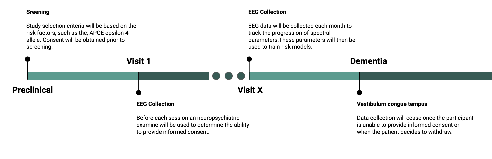

Data Collection#
Design#
Developing a model to accurately predict risk of AD disease will require a longitudinal study to track the progression of AD. This will require repeat measurements starting in the preclinical stage and ending at the beginning of the dementia, an estimated 15 year span. Study selection criteria should be based on the risk factors discussed in the epidemiology section, such as individuals with the APOE epsilon 4 allele. This prevents collecting unnecessary data and reduces potential harms from the study. Once participants are selected, scalp EEG recordings would be taken every month from the start of the trial. Ethical concerns arise when considering consent and privacy.
 Figure 2. Stages of data collection and progression of Alzheimer’s disease.
Consent#
A key component of consent in AD research is autonomy, referring to one’s ability to competently make decisions for themselves (Kim 2011). In the context of research, this includes the ability to provide informed consent. Assuming all participants are in the preclinical phase at the start of this longitudinal study, participants will initially be autonomous and able to provide informed consent. However, this ability comes into question as the participant progresses towards dementia and cognitive impairments become pronounced. Even in the MCI stages, substantial impacts of decision making have been observed (Kim 2011). This poses a challenge when determining a cognitive threshold required to consent. It also raises the question if proxy consent, provided from a caregiver on behalf of the AD patient, should be allowed or what limitations should be implemented when proxy consent is required (Chandra et al., 2021). Use of a proxy potentially introduces ulterior motives, such as a caregiver inheriting benefits like monetary compensation the participant receives for being in the study. In addition to consent, there is assent, a minimal version of consent, and dissent, such as lack of cooperation when participating in the study.
Due to the expectation of declining cognitive abilities, informed consent will be obtained prior to the start of the study and during each month prior to EEG recordings. Neuropsychiatric examinations will also be used to quantify cognitive, memory, and decision making skills. This is to ensure impaired memory or comprehension does not interfere with the ability to consent. Additionally, subtle signs of dissent will be closely monitored. This includes signs of distress, frustration, or unhappiness. Proxy consent will not be used to respect participant autonomy and to prevent ulterior motives from third-parties. Research is highly limited and constrained when proxy consent is required (Kim 2011). This is not expected to infer with data collection as EEG recordings from late stage AD will not be required to train predictive models since the aim is to detect AD as early as possible.
Privacy#
Concerns of privacy and confidentiality are challenges faced in medical research. When screening participants for genetic predispositions for AD, genetic data must be secure and handled with care. Genetic biomarkers could also be used by insurers to deny coverage or charge high premiums to those at risk for developing AD (Davis 2011). These concerns raise the issue of privacy, protected patient health data (PHI), and compliance with the Health Insurance Portability and Accountability Act of 1996 (HIPAA).
A solution to these concerns includes use of protocols designed for secure data store, data anonymization, and compliance with procedures outlined in the HIPPA. Robust data collection protocols will be created to ensure all PHI data is securely stored and encrypted. Access to the collected data will only be granted to authorized individuals who have approval to analyze the data and demonstrate the ability to safeguard PHI. Furthermore, all data will be de-identified to minimize the risks. HIPPA guidelines will be followed to reduce risk of a data breach and protocols will be followed that prompt detection and reporting of cases of data breaches.